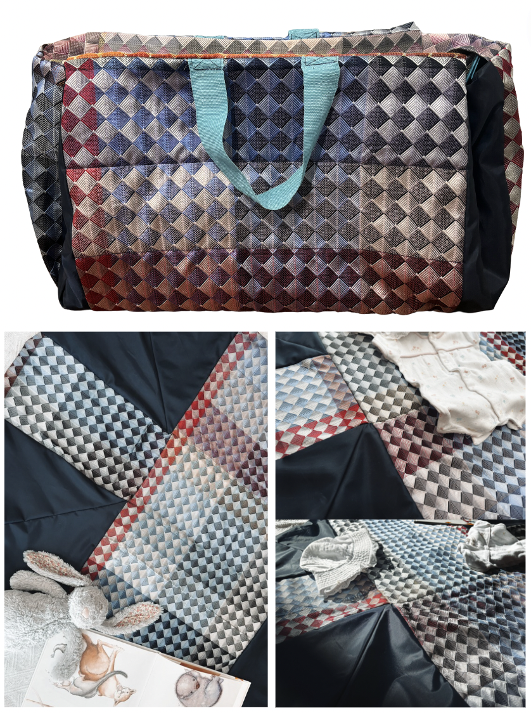

Examples of My Work
Below are some samples of work I completed at university and school. Many of these tasks may be simplified and implemented into a classroom setting.
Major Work: Threads of Imagination
The above video is the proposal for my Textiles Major Design Project. I am currently undertaking this project and hope to create an art hanging wall quilt for Ronald McDonald House. This art quilt aims to provide a sense of escape to young children and families during such a challenging time.
Creativity Card Game
View the Creativity Card Game PDF

This card game was designed to assist with creative thought and inspire major design projects. This card game was a concept that I derived and it provides students with ideas, constraints and considerations to make when developing a project. This game would be highly interactive and engaging within a classroom setting, however, also assists students with idea generation.
Little Comfort: Nappy Bag
The Little Comfort Nappy Bag was designed for a project where I was required to keep sustainability in mind. I therefore developed a concept to create a nappy bag which could fold out into a change mat. This bag utilises an old shopping bag as well as sustainably sourced materials.
Leather Checkerboard
I completed this checkerboard for a uni project where we were required to make a medieval style leather 'kit'. The concept of the kit was to provide others with the pieces to design their own leather work. This kit included the backing for the board, pre-cut circles, the thonging for the outter stitching and the waxed thread for the centre grid. A similar project could be undertaken within schools where students are required to demonstrate their skills in order to develop their own kit.
Medieval Costume

This medieval costume was designed for the same unit as the leather checkerboard. The focus of this unit was medieval fashion and design, hence the development of a medieval garment. This ensemble was a group effort, however, I constructed the cloak from pure mohair wool and made the embellishments on the pin.
Food Photography


The images above are examples of food photography displays that I curated at university. The image on the left is a recipe I created from scratch as part of an assessment task. This recipe featured a grilled citrus marinated chicken with quinoa salad and seed crackers. The image seen on the right was developed purely for food photography as a demonstration of photography techniques.